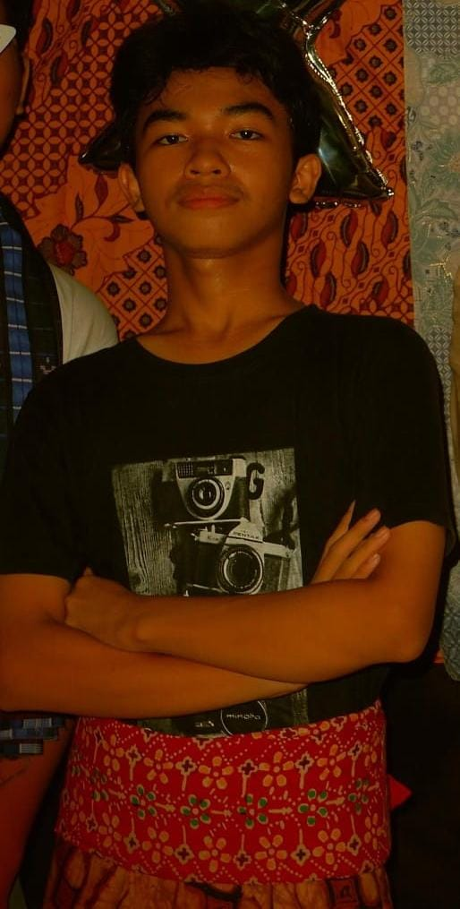

Bayu Samudra
Programmer Web
Phone
Email
bayusmdrx@gmail.com
Location
Jakarta, Indonesia
About Me
Sebagai programmer web, tugas saya merancang, mengembangkan, dan memelihara situs web agar berfungsi optimal. Saya memastikan tampilan menarik, responsif, serta sistem berjalan lancar di sisi pengguna dan server.
Saya menguasai HTML, CSS, dan JavaScript untuk membangun tampilan web yang menarik, interaktif, dan responsif, serta memastikan pengalaman pengguna yang optimal di berbagai perangkat.
What I Do !!!

BERMAIN GAME
Saya memiliki hobi bermain game karena dapat melatih strategi, ketelitian, dan menjadi cara menyenangkan untuk mengisi waktu luang serta melepas stres.
MENDENGARKAN MUSIC
Saya hobi mendengarkan musik metal karena energinya yang kuat, liriknya yang dalam, dan mampu membangkitkan semangat serta ekspresi diri. Musik metal juga memberi ruang untuk refleksi, membantu saya tetap fokus, dan menjadi pelarian positif dari rutinitas sehari-hari.
FUTSAL
Saya hobi bermain futsal karena selain menyenangkan, olahraga ini membantu menjaga kebugaran tubuh, melatih kerja sama tim, dan meningkatkan konsentrasi. Bermain futsal juga menjadi cara saya untuk bersosialisasi dan melepas penat setelah beraktivitas.
.png)
CODING
Saya hobi ngoding karena merasa tertantang untuk memecahkan masalah dan menciptakan solusi digital yang bermanfaat. Kegiatan ini juga membantu saya terus belajar dan mengembangkan keterampilan logika serta kreativitas dalam teknologi.